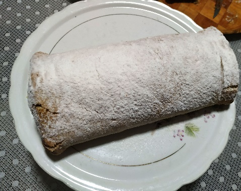
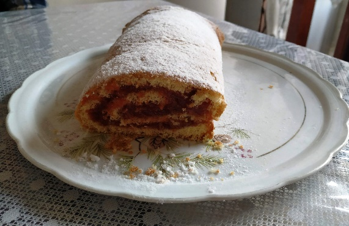
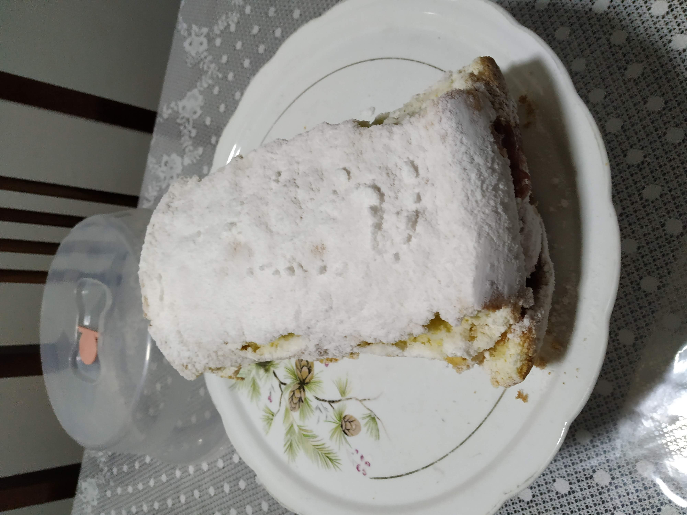
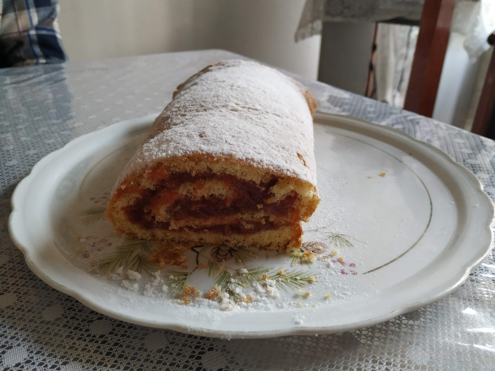

Rocambole
Ingredientes
- Massa:
- 150 g de farinha de trigo
- 150 g de açúcar
- 6 ovos
- 1 colher de fermento químico
Modo de Preparo
Bater as claras em neve, depois juntar as gemas e bater mais um pouco. Acrescentar o açúcar, a farinha e o fermento. Assar em uma forma retangular untada e forrada com papel manteiga. Depois de assado colocar a massa sobre um pano limpo umedecido e com um pouco de açúcar por cima. Retirar o papel e despejar o recheio desejado, pode ser goiabada, doce de leite ou outro. Enrolar o rocambole fazendo inicialmente uma pequena dobra na massa e depois com o auxílio do pano terminar de enrolar.



